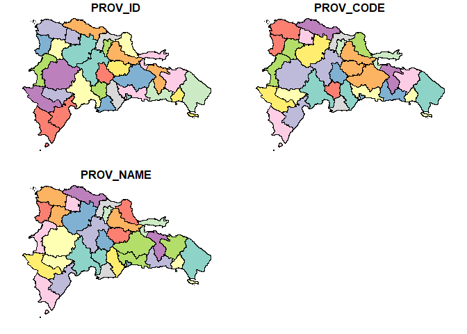

The goal of sfDR is to provide a comprehensive suite of simple feature (sf) objects for the administrative boundaries of the Dominican Republic, facilitating geospatial analysis and mapping.
sfDR is designed to be used through the rgisDR package, which provides the same and other functions for working with geographic data of the Dominican Republic in R.
You can install rgisDR from r-universe with:
install.packages("rgisDR", repos = c("https://adatar-do.r-universe.dev", "https://cloud.r-project.org"))You can visit the rgisDR website for more information.
Installation
You can install the development version of sfDR from r-universe with:
install.packages("sfDR", repos = c("https://adatar-do.r-universe.dev", "https://cloud.r-project.org"))Example
This is a basic example showing how to use sfDR to plot a Dominican Republic province map:
library(sfDR)
DR_PROV_SF <- dr_provinces()
plot(DR_PROV_SF)
Suppose you have a dataset showing the percentage distribution of remittances received in each province of the Dominican Republic for a specific year. To visualize this data using a graph with sfDR, you first need to combine the remittance data with the province data.
library(dplyr)
#>
#> Attaching package: 'dplyr'
#> The following objects are masked from 'package:stats':
#>
#> filter, lag
#> The following objects are masked from 'package:base':
#>
#> intersect, setdiff, setequal, union
datos <- DR_PROV_SF |>
left_join(remittance_by_province, by = join_by('PROV_NAME' == 'province'))
datos %>%
sf::st_drop_geometry() %>%
head()
#> PROV_ID PROV_CODE PROV_NAME percentage
#> 1 21 SC San Cristóbal 0.010738704
#> 2 14 MTS María Trinidad Sánchez NA
#> 3 17 PER Peravia 0.005948295
#> 4 20 SAM Samaná NA
#> 5 18 PP Puerto Plata 0.018996422
#> 6 11 LA La Altagracia NATo get the desired graph, just apply the plot function to your data.

Next, we show how to achieve a similar result using ggplot2. This serves to demonstrate how to create maps in both ways and to highlight the simplicity of the process by integrating everything in one step.
library(ggplot2)
#> Warning: package 'ggplot2' was built under R version 4.3.1
dr_provinces() %>%
left_join(remittance_by_province, by = join_by('PROV_NAME' == 'province')) %>%
ggplot() +
geom_sf(aes(fill = percentage)) +
theme_void()
Code of Conduct
Please note that the sfDR project is released with a Contributor Code of Conduct. By contributing to this project, you agree to abide by its terms.
License
This project is licensed under the MIT License - see the LICENSE.md file for details.